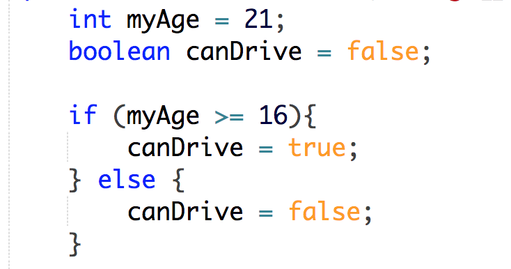
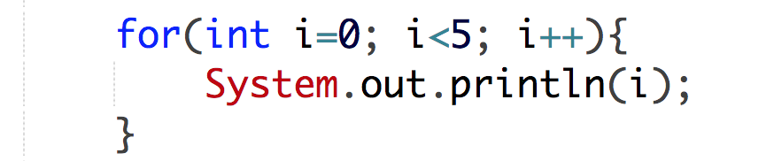
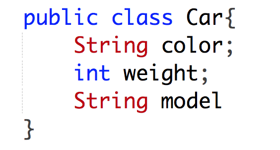

Java

"What is Java? Java is a cross-platform object-oriented programming language that was released by Sun Microsystems
in the year 1995. Today, Java is needed to run various applications such as games, social media applications, audio and video applications, etc. It is highly popular and has dominated this field from early 2000’s till the present 2018.
Some of the applications are listed below:
Banking · Retail · Information Technology · Android · Financial services · Stock market · Big Data · Scientific and Research Community"
Concepts
"Variables are used to store information to be referenced and manipulated in a computer program. They also provide a way of labeling data with a descriptive name, so our programs can be understood more clearly by the reader and ourselves. It is helpful to think of variables as containers that hold information. Their sole purpose is to label and store data in memory. This data can then be used throughout your program."
In English, if statements are quite simple. If a condition is true, then do something. For example, if your shoes have a hole, then buy a new pair of shoes. If statements also usually have an ‘else.’ For example, If your shoes have a hole, buy a new pair of shoes. Otherwise (else), don’t. This structure is used very frequently in coding. Let’s say you try to log into your Facebook account. When you type in your password, it checks to see if it is the same as the password they have on file for you. If it is, you are logged in. If it is not, you are prompted to try again. In if statement syntax: if the password is correct, the user is logged in. Else, the user must try again.
"There may be a situation when you need to execute a block of code several number of times. In general, statements are executed sequentially: The first statement in a function is executed first, followed by the second, and so on. Programming languages provide various control structures that allow for more complicated execution paths. A loop statement allows us to execute a statement or group of statements multiple times and following is the general form of a loop statement in most of the programming languages."
"Java is an object-oriented programming language. Everything in Java is associated with
classes and objects, along with its attributes and methods."
A class in
essentially a blueprint used for creating something. An object is the thing you create from the blueprint. For example, you could have a blueprint for a house
(a class), and when you build a house using the blueprints, that house is the object. Attributes are details about the house, like its color and size. Methods are things
the house can do, like 'turn on heat', or 'close door.'
Resources
Getting Started
- Why should you study Java? Answer that hereFrom laptops to datacenters, game consoles to scientific supercomputers, cell phones to the Internet, Java is ubiquitous.
- If you prefer an in-depth, textbook-based approach, try zyBooks's Java course.The zyBook was written from scratch to teach programming using the real power of the web, using less text, hundreds of learning questions, animations of challenging concepts (like recursion and references), interactive tools to develop intuition and skill, and programming practice windows seamless integrated throughout the web material.
- Start programming here. This basic Java course is a great way to get acquainted with some of the language's most important concepts. In this course you’ll be exposed to fundamental programming concepts, including object-oriented programming (OOP) using Java. You’ll build 7 Java projects—like a basic calculator—to help you practice along the way.
- For a much more in-depth study of Java, try Coursera's Java Programming and Software Engineering Fundamentals Specialization.Designed for beginners, this Specialization will teach you core programming concepts and equip you to write programs to solve complex problems. In addition, you will gain the foundational skills a software engineer needs to solve real-world problems, from designing algorithms to testing and debugging your programs.
Projects
- Rolling a DieThis short tutorial will show you how to write a program that simulates rolling a 6-sided die.
- Banking ApplicationThis beginner-friendly project walks you through creating a bank account application using the Java programming language. The application greets the user and asks them which function they would like to perform.
- More Java projects for beginnersThis page contains descriptions and links to 10 Java projects intended for beginners, including games and business functions.
"From laptops to datacenters, game consoles to scientific supercomputers, cell phones to the Internet, Java is ubiquitous."